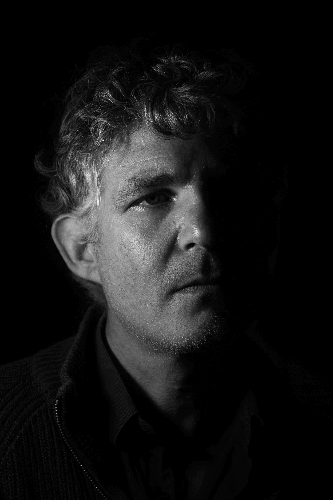
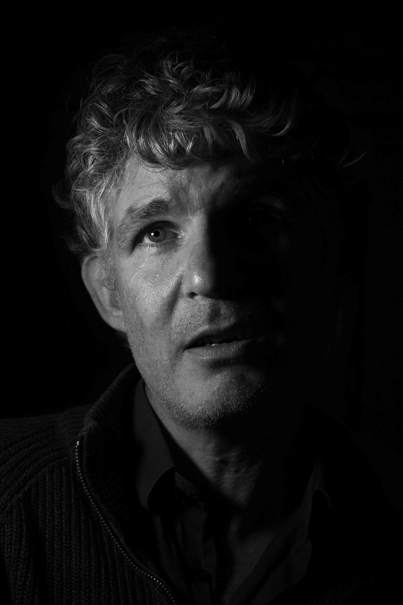
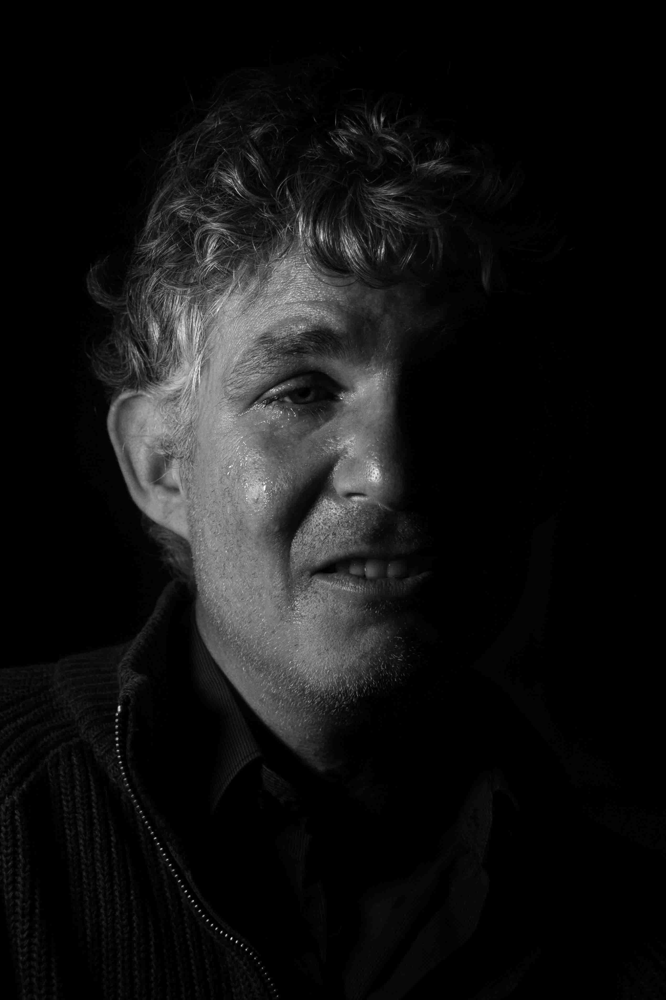

Listen to this page:
Charlie is a conservation scientist, writer and environmental activist working with societal responses to environmental crises.
"Angry"

He is deeply angered by what he feels has been done to the planet, “we had this beautiful world that has been taken from us – and much of the damage has been done knowingly, through greed.” He says that the anger can be quite motivating, “we need to act thoughtfully, but I don’t think anger is a particularly damaging emotion – it’s quite an empowering one.”
"Disbelieving"

“I cannot f*cking believe that we had everything, and we allowed it to be destroyed. How can that be?!” he asks, incredulous. The discussion is tinged with sadness, “it’s not shock, I literally can’t describe it. It’s the most outrageous and nonsensical thing.” He says he feels this deeply as a scientist, “you spend your entire life coming up with answers, and people choose not to use them. We have the answers – we know what to do. But as a society we just don’t do it. We could sort all of it out if we just decided to dedicate adequate resources to it. It’s just completely incomprehensible. It just doesn’t make any sense at all.”
"Scared"

“I feel really scared. I’m not just scared about what’s happening to the world. What scares me the most is not the collapse of our societies. What scares me is the rise of fascism and what that could mean for me as an activist”, he explains, beginning to cry. I cry with him. “Perhaps I didn’t realise how scared I was. Maybe it’s just there bubbling away all the time… But I don’t think it’s healthy – it’s not helping my resilience at all. If there’s one trend in me over the years, it’s a big decline in my emotional resilience. I’m not tough anymore.”
I ask him if he feels hope, “Yes and no – I feel more hope than I’ve ever felt before, thanks to the rise of activism. Yes, the problems are so much worse – but we’re much closer to change now. The only hope we have is people power – either we take our planet back or we lose it.” He continues, “but I don’t like the idea of hope – hope is related to faith, it’s magical – somehow it will be ok. For a lot of people hope can be disempowering – ‘it will be OK, so I don’t need to fight’. But I don’t need hope to fight. I understand that hope is motivational and empowering on an individual level, but on a societal level, hope is really dangerous.”

Visit the project website